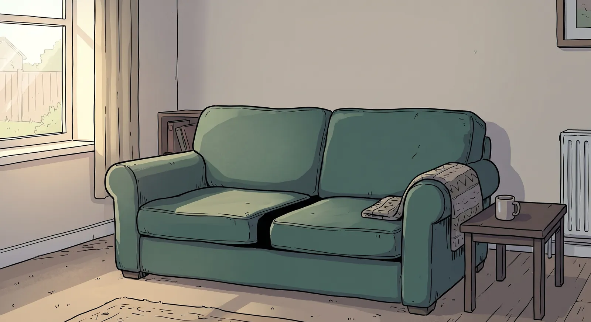

You don't need the answer. You need the next step.

A 4-mark question is not all or nothing. A marker gives you marks for the method: the calculations on the way, even if the arithmetic goes wrong or you never reach the answer.
Here you never work anything out. Each question has steps a marker would credit. Tap the calculations you could write down, in any order that makes sense. Every step that earns a mark goes on the sofa.
Be careful: some of the calculations are nearly right.